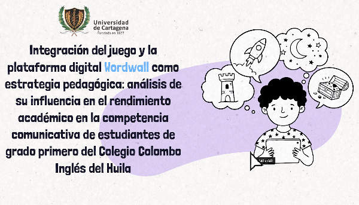
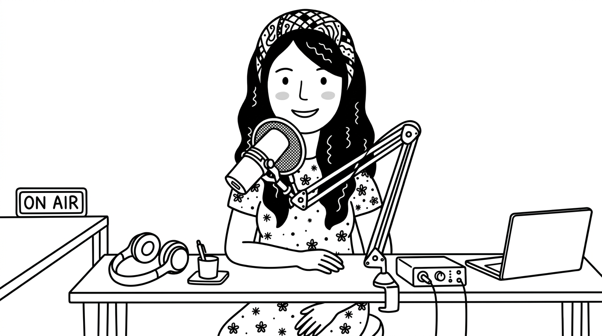

Video Tutorial y Metodología
Explora el recorrido audiovisual por el portafolio digital y el video pitch de la metodología de investigación.
Video Tutorial del Portafolio

Haz clic para reproducir
Video Pitch — Metodología

Haz clic para reproducir